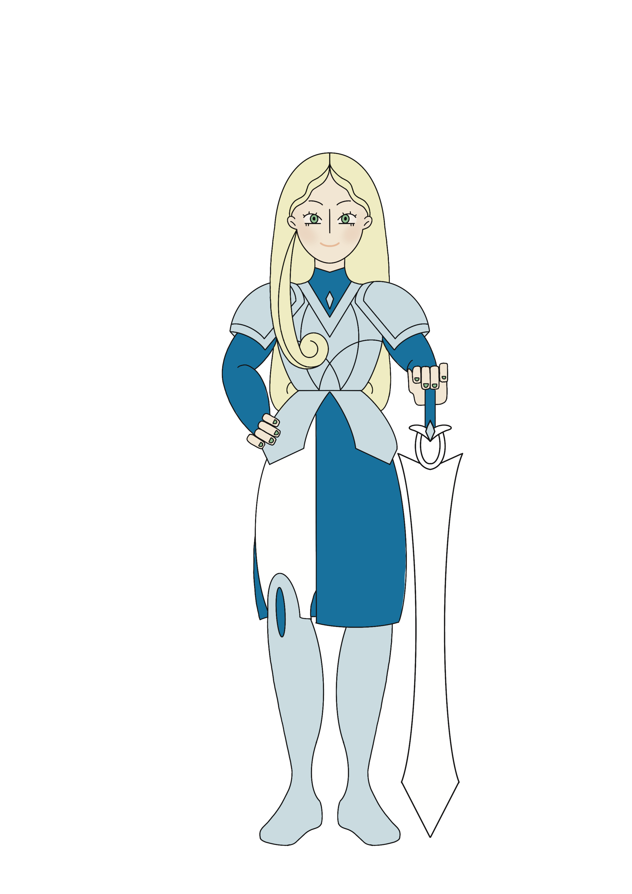

Cette chevalière est aussi chipie que sournoise. Grande combattante, elle sort victorieuse de ses combats grâce à son intelligence. Elle aime se battre dans une grande robe rouge, sa couleur préférée, et un peu dorée assorti ses créoles aux oreilles. Elle associe force et élégance. Un peu têtue sur les bords, son page est souvent là pour la raisonner. Il est son pilier, son référent. Son arme préférée ? L’arc. Avec, elle peut être aussi rapide que furtive, précise et discrète à la fois.

Il est la force tranquille par excellence. Toujours là pour épauler et guider sa chevalière, il veut être à ses côtés pour la conseiller et temporiser sa fougue. Son petit talent caché ? Il est le roi des moelleux aux chocolat, le dessert préféré d’Elisabeth.

C’est la guerrière par excellence. Pour elle, la meilleure défense c’est l’attaque. Elle ne se laisse jamais surprendre par son adversaire. Et c’est d’ailleurs elle qui établit tout les plan d’attaque. C’est la chevalière qui a toujours un coup d’avance. Tenace et fougueuse, elle déteste l’injustice. Sa couleur préférée ? Le bleu, comme la loyauté. Sa robe est toujours bien ajustée, afin de ne jamais la gêner. Bien évidemment son arme, c’est une grande épée, fine mais pointue. Légère mais précise. Un cadeau hérité de son grand-père.

Ayant une chevalière très indépendante, Lucius, à du mal à courir derrière elle. Mais il s’y est habitué. Amoureux d’elle en secret, il ne supporte pas d'être loin d’elle. Il aime être à ses petits soins même si cela énerve cette dernière il ne peut pas s’en empêcher. C’est son premier rôle de page, alors il est un peu candide dans sa façon de faire, mais sa bonne volonté plaît à sa chevalière.
- 
Sa prestance fait que l’ont s’écarte de son passage. Toujours là pour calmer les idées fougueuses d’Elisabeth, et les nerfs d’Alessandra. Maligne et réfléchie, Marie-Juliette n’en reste pas moins une chevalière sensible et très respectueuse de son page. Toujours à le couver comme une mère, le ferait avec son petit. Elle le protège et fait toujours attention à lui. Elle aime les choses justes et respectueuses. Après avoir lourdement travaillé pour obtenir son titre de chevalière, Marie-Juliette fait tout son possible pour l’honorer au mieux. Pour se battre, elle utilise une magnifique lance. Réalisé en bois de chêne, ornée de bois de feuille de lier, une arme puissante et directe.

C’est un page agréable et sympathique. Il s’est ou est sa place. Il connaît Marie-Juliette par cœur et sait constamment de quoi elle a besoin. Il est très heureux d’être son page d’ailleurs. Il rêve d’un jour pouvoir devenir chevalier à son tour, mais en attendant cela il observe d’un regard passionné les exploits de M-J.